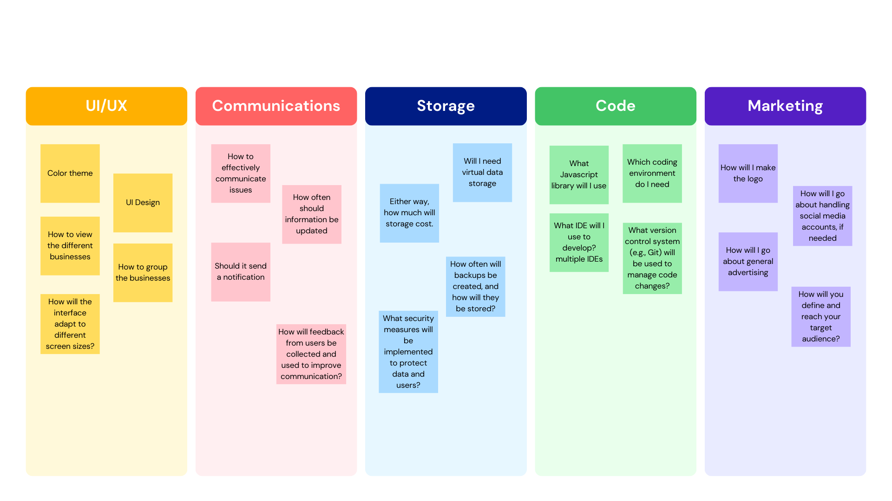

Highlighted projects
Problem Statement

Entrepreneurs who own businesses in niche locations (airports, amusement parks, schools, museums, etc.) need an easy way to track their performance.
Affinity Diagram
The diagram organizes project considerations into five key categories: UI/UX, Communications, Storage, Code, and Marketing. Each category highlights specific tasks or questions that need addressing. For UI/UX, the focus is on design elements like color themes, business grouping, and viewing methods. Communications examines how to manage updates, send notifications, and address issues. Storage emphasizes virtual storage needs and cost considerations. The Code section includes decisions around JavaScript libraries, development environments, and IDEs. Marketing discusses logo creation, advertising strategies, and managing social media accounts. Overall, the diagram provides a structured overview of essential project components across various domains.